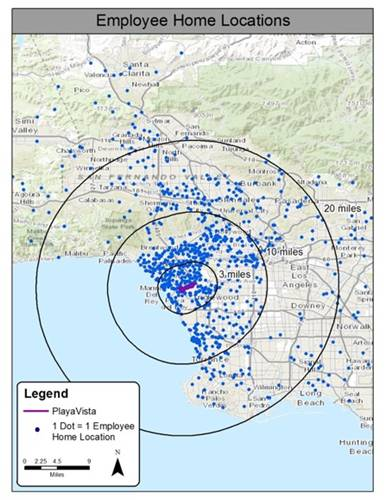
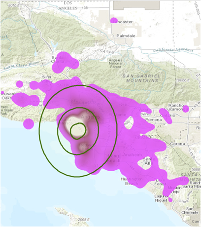
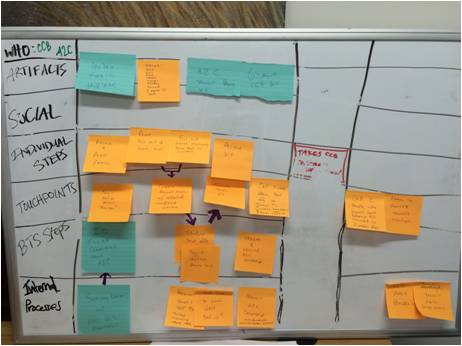
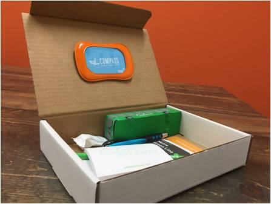
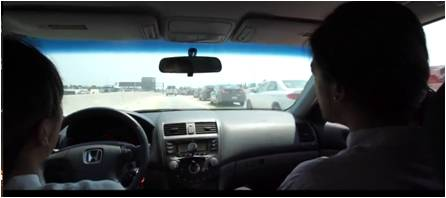
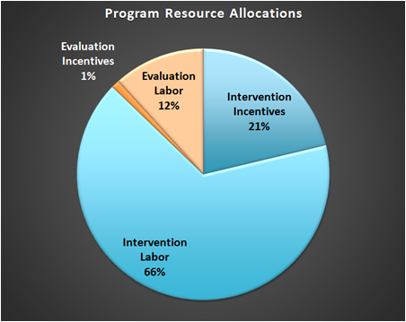
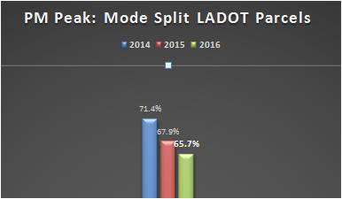
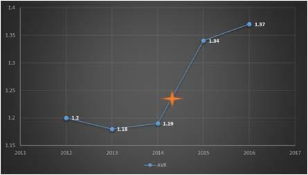

Tools Used
- Building Motivation Over Time
- Financial Incentives and Disincentives
- Obtaining a Commitment
- Overcoming Specific Barriers
Initiated By
- Community of Playa Vista, California USA
Results
- 4.9% decrease (a decrease of 3.5 percentage points from 71.4% to 67.9%) in peak time drive alone mode share across the entire community over seven months
- Corresponding increases in carpool trips, cycling trips and transit Trips
PDF of this case study
Webinar Transcript
Landmark Case Study
Playa Vista Ability2Change
Playa Vista's Ability2Change program is a great example of a targeted, strategic approach to transport behavior change. It features careful market segmentation and barrier removal, with different initiatives for different people. In just seven months it yielded a 4.9% decrease in peak time drive alone mode share across the entire community (a decrease of 3.5 percentage points from 71.4% to 67.9%), with corresponding increases in carpool, cycling and transit trips.
Background
Note: To minimize site maintenance costs, all case studies on this site are written in the past tense, even if they are ongoing as is the case with this particular program.
Better known as "Silicon Beach", Playa Vista is a commercial, residential, and retail development in west Los Angeles, home to some of North America's most congested roadways. In 2015 the development was still new, its growth rate surpassed 40%, and companies in the development employed about 6,000 employees.
The Playa Vista development created Compass, a transportation demand management (TDM) program designed to change commuter behaviour. Compass in turn created the Playa Vista Ability2Change work-place based transportation campaigns. The campaigns used custom services and incentives to overcome specific barriers.
Setting Objectives
This program’s goal was to decrease single-occupant-vehicle (SOV) peak period behaviors in Playa Vista, California. There are no targets to report.
Getting Informed
The first steps in the Ability2Change campaigns were to visualize the home locations of single-occupant vehicle (SOV) drivers, and to analyze the existing transportation infrastructure to identify the regions where one could safely and realistically adopt the desired behaviour(s). Transit, cycling and pedestrian routes, and the home locations of existing carpoolers were studied to identify where these travel modes were already succeeding without outside intervention.
The City of Los Angeles's commuter behaviour database (all new developments are required to measure and monitor commuter behaviours) provided some of the data required.

The blue dots are the home locations of all of our commuters In 2015, only 13% of commuters lived three miles or less from work and 34% lived 4-10 miles from work. At the same time, only 9% lived 20 or more miles from work.

By 2016, more commuters lived close to work: 28% lived three miles or less from work (a 15% increase) and 39.7% lived 4-10 miles from work. However, 15.8% lived 20 or more miles from work – a 6.8% increase.
Next, Compass conducted a behavior change assessment to figure out what it already knew and could learn from other programs about fostering the targeted modes.
Focus groups were then held with existing users of non-SOV modes to identify how to “create more people like them”, and how to best promote Ability2Change programming and incentives.
A network of employer representatives from each worksite helped to identify program delivery channels, and partnerships were created with other transportation organizations.
For each targeted mode, Compass also conducted a service design exercise to map out the process that commuters went through and the barriers they faced when using that mode.

Delivering the Program
The Ability2Change campaigns strove to match the right SOV commuter with the right mode, and to provide supportive programming at the right time.
Compass created three mode-specific campaigns: transit, ridesharing, and cycling. For each mode, it focused initially on those people who had the ‘ability2change’ to that that mode, rather than on motivation to change. Compass considered this an enhancement to individualized marketing. As Gaul explained, “that's been a differentiator in this program; we can work on motivation later. But if we super focus on ability, then we can use a lot less work to get them motivated.
Targeted individuals were sent a series of tailored emails asking them to look at the transit zone map and to select one or more of the three targeted modes. From there, they opted in to receiving each type of incentive.
Transit Campaign
For its transit campaign, Compass targeted SOV drivers who lived within 1/2 mile (0.8 km) of work via a one-transfer transit ride.
With more than 24 municipal transit agencies in the county, one of the biggest barriers was confusion over which route(s) to take. Convenience, time, missing a bus, and being stranded were also concerns. Compass therefore created an interactive online map that let commuters input their home address and quickly find if they lived in a ‘transit zone’, as well as the best transit route(s) to take. (Overcoming Specific Barriers; Vivid, Personalized, Credible, Empowering Communications)

This map quickly showed commuters if they lived in one of the targeted ‘transit zones’, and the best route to take.
Commuters who expressed interest then received a package containing a free transit pass and "swag." Compass also included a series of cards, each of which covered a different topic (e.g. the emergency ride home program, information about bus passes, and a "pro tips” sheet). (Building Motivation, Engagement and Habits over Time; Incentives; Vivid, Personalized, Credible, Empowering Information)

Commuters who expressed interest then received a package containing a free transit pass and "swag."
"If you're already a transit rider, you know these things, but if you're just starting out you may be worried about the repercussions," said Aaron Gaul, Director of UrbanTrans North America, a planning and marketing firm hired by Compass to deliver the campaigns. "Not knowing how to ride a bus was a barrier that we took to heart. It sounds simple, but many people don't want to admit they don't know how to do it."
Because zip codes in the area are so large, Compass always gave people an option to opt out so that they didn't feel like they were being talked to in an inappropriate manner. That also opened a new door to talk about the right things with them.
Ridesharing campaign
For its ridesharing campaign, Compass targeted SOV drivers who lived in locations that were not well served by other options. Priority was given to those drivers who had HOV (high-occupancy vehicle) toll lanes or park/ride facilities near their homes.
“A lot of the employers that were setting up shop had their own TDM or transportation programs. We brought them all together and created a critical mass”, said Gaul.
As in the transit campaign, all home locations were mapped out. "We found where those people were, and we specifically reached out only to them," said Gaul. (Vivid, Personalized, Credible, Empowering Information)
The following table shows the key barriers to ridesharing and how each was addressed by the program. (Overcoming Specific Barriers)
|
Barrier |
Solution(s) |
|
Other TDM programs at employers |
Compass brought all employers together to deliver the campaign, which included the emergency ride home program |
|
Not sure how to rideshare / find others |
Developed incentive program to walk people through the steps, and created rideshare program people could sign up for |
|
Don't want to commit |
Emphasized trying the behaviour for one day, without a long-term commitment |
|
Need a car during the day |
A shuttle service was provided for the development, free of charge, and Compass also looped in other programs such as Uber and Lyft |
Compass created an incentive scheme that walked people using baby steps to walk people through the initial barriers related to getting started. "We emphasized committing to trying, not committing to long-term use," Gaul explained. "We asked them to try it on a Friday - or some other convenient day - and see how it worked." (Building Motivation, Engagement and Habits Over Time)
“We also wanted to help people visualize the benefits vividly,” said Gaul. Compass created a video that showed the feeling of going down the HOV lane fast compared to traffic in the regular lanes. “That's something that's really hard to get into someone's mind until they do the behavior, so we wanted to showcase the feeling they would get.” (Vivid, Credible, Empowering Communication)

Compass created a video that showed the feeling of going down the HOV lane fast compared to traffic in the regular lanes.
When commuters opened an account with the rideshare program, they were given $5, and an additional $15 if they posted a carpool matching request. "Posting requests was a huge barrier so we built the incentives in," said Gaul. "We also gave them a $5 gift card if they messaged their carpoolers through our online tool." Additional incentives included a transponder so that drivers could access the HOV toll lanes for free, a $35 gas card when they started, and smaller gifts based on a lottery system. (Incentives; Obtaining a Commitment; Overcoming Specific Barriers)
To keep rideshare participants engaged, Compass sent out regular messages, which included tips on forming carpools, when and where Playa Vista rideshares met, and similar information.

.png)
Cycling campaign
As in the other two campaigns, Compass targeted SOV drivers in specific areas around Playa Vista for its cycling campaign.
"The big barrier here was infrastructure. This is a car-centric community, so you've got to have the infrastructure to create new behaviours," said Gaul. Compass conducted a series of focus groups to better understand the experiences of people who were already cycling.
"We had them draw on a map how they got to Playa Vista, and other routes that new cyclists could take," Gaul explained. From that, they honed in on what infrastructure would work best to encourage cycling.
Another common barrier was not owning a bike. "A lot of programs assume someone owns one, which is often not the case, so we had to overcome that." Compass created a bike loaner program with a local bike shop that had recently opened in Playa Vista. New cyclists could try the behaviour to see if they liked it, without having to invest in a new bicycle. (Building Motivation, Engagement and Habits Over Time; Overcoming Specific Barriers)
.png)
Comfort and hygiene were also cited by commuters as barriers. Despite shower facilities at many work sites, many commuters were reluctant to use them. Compass gave cyclists branded "Action Wipes" (large cleansing wipettes) that could be used in place of a full shower. They also hosted "lunch & learns" and brought in registered trainers to educate people on all aspects of cycling. (Overcoming Specific Barriers)
Financing the Program
All funding was provided by the Playa Vista property owners. The program is one of a number of community-wide amenities that they support through annual fees. Funding increases slightly as the community grows. Further, trip mitigation targets are not met, the TMA gets more resources to deliver interventions.
"Brookfield had the foresight to arrange this," said Gaul. "Many TMAs spend a lot of time trying to track down money instead of trying to actually deliver programs. This fully pays for the TMA. It also means that the TDM services were subsidized by all the employers."
The largest chunk of this budget went to intervention labor, at 66%; only 1% went for evaluation incentives; 12% was for the survey. The intervention incentives are about 21% of the program's budget.

Measuring Achievements
Compass was required by law to use California's regional framework, as laid out in their Rule 2202, Employee Commute Reduction Program Guidelines. Among its requirements, the framework set guidelines for the survey instruments used in the campaigns.
Campaign impacts were measured primarily through an annual commuter survey conducted in October, and gate counts at office parking garage entrances.
We were required to have a 60% response rate, according to the regional evaluation framework," said Gaul. If an employer got a 65% survey response rate or better, Compass gave them $100. It also gave awards to specific employers at special annual presentations. For example, there were awards for the highest response rate, the lowest SOV rate, and the newbie award, “just to make it fun because it's a lot of hard work by everybody.”
For employees, Compass provided small incentives during the survey week to get people excited and talking. It randomly distributed 100 five dollar gift cards throughout the week to people who completed the survey. In addition, if the worksite had over a 5% participation rate, someone at that worksite won a big prize.
Average vehicle ridership (AVR) was measured by dividing the total number of employees arriving at the worksite in a given work week by the number of vehicles. Staff with the property owners tracked the gate counts.
To gather additional information on participation and engagement, specific campaigns such as the transit campaign also used on-line trip reporting. Bike Month participants were also surveyed in late June 2016 and Culver CityBus Transit Pass users had their transit passes audited in July 2016 to validate impacts.
Results
From April to October 2015, peak time drive-alone mode share across the entire development decreased by 4.9%; it continued to drop in 2016.

From April to October 2015:
- Carpool Trips increased by 12% (to 9.5 % in 2015 from 8.5% in 2014)
- Biking Trips increased by 53% (to 2.6% in 2015 from 1.7 % in 2014)
- Transit Trips (rail, plane, bus) increased by 10% (to 4.4% in 2015 from 4% in 2014)
The AVR for the 2015 evening peak hour was 1.34, a 13% increase compared to the AVR of 1.19 observed in 2014. It should be noted, however, that between April and October 2015, the commuter population of the area doubled. By 2016 it had increased to 1.37.

Average Vehicle Ridership during the peak PM period increased steadily towards the goal of 1.5. The orange start marks the beginning of the Compass program.
Starting in April 2015, Compass enabled employees to self-report sustainable trips. Within a year, more than 20,000 trips had been reported, more than 65 tonnes of CO2 emission had been prevented, and commuters reported a collective savings of more than $85,000.
Return on Investment: It cost Compass $10,800 for each percentage point decrease in SOV behavior across the entire development.
Contacts
Aaron Gaul
Playa Vista Compass
aaron@playavistacompass.com
310.929.5946
Notes
Lessons Learned
Invest in good data
Gaul said that having good data was key in Compass's campaigns.
"Much of our evaluation was prescribed," said Gaul (Rule 2202). "We knew what we had to measure and that gave us a good foundation."
Gaul said that data came from a few sources, including the city's commuter behaviour database, but primarily from the commuters themselves. Employee home locations were plotted so that organizers could see which campaign would work best for which commuters.
"The biggest part was ensuring that we were managing the data correctly," said Gaul. "The strategies only worked when you had a lot of people providing the data and opting in."
Let the commuter be your guide
Unlike other transportation programs, Compass focused on a commuter's ability to do the behaviour, not the person's motivations.
"We could work on motivation later, but if we focused on ability, it took less work," said Gaul. "The reality is that no matter where you are no one loves traffic. No one loves the cost of driving and everyone loves having more time in their day."
Compass also learned from commuters who were already doing certain behaviours, like cycling.
"We invited the people who were already doing it to lunch-and-learns to talk about their experiences," said Gaul. "If there were things that were impeding their ability to do the behavior, we had to come up with a solution."
For example, Gaul said that many cyclists stopped biking each year when Daylight Savings Time started (and clocks were shifted an hour ahead) because it was too dark and they didn't feel safe. "That was a huge element that we had to address," he said. "We found ways to change that, including lighting some areas and equipping riders with lights. If they still wouldn't cycle, we focused instead on their secondary sustainable travel options, so they didn't fall back into being single-occupant vehicle drivers."
Compass always gave participants an option to opt out. "We gave them an easy way to say, 'This isn't for me, but thanks for reaching out’" Gaul said. "That allowed us to respect the communication with them, overcome issues of privacy, and open a new door to talk about other options they might be interested in."
Use existing programs to your advantage
Gaul said some of the larger Playa Vista employers already had their own commuter incentive schemes, based on the regional framework. "If they were a big employer, they were already forced to do certain things.” Compass built on these efforts.
Landmark Designation
The program described in this case study was designated in 2016.
Designation as a Landmark (best practice) case study through our peer selection process recognizes programs and social marketing approaches considered to be among the most successful in the world. They are nominated both by our peer-selection panels and by Tools of Change staff, and are then scored by the selection panels based on impact, innovation, replicability and adaptability.
The panel that designated this case study consisted of:
- David Levinger from The Mobility Education Foundation
- Geoff Noxon from Noxon Associates
- JoAnn Woodhall from Translink
- Nathalie Lapointe from the Federation of Canadian Municipalities
- Phil Winters from the University of South Florida
- Ryan Lanyon from the City of Toronto.
This case study was written in 2018 by Jay Kassirer and Sharon Boddy.